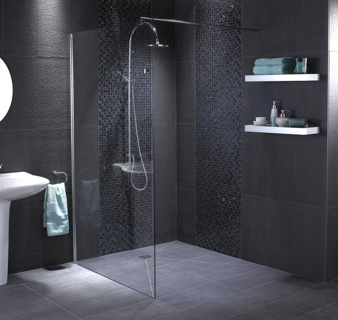

No limitations, no restrictions, no curbs. Nothing should stand between you and your rainbath. The ultimate and safest showering experience
Why go curbless?
A curbless shower is the perfect compromise (and a beautiful one!) when it comes to accommodating the needs of everyone in your home. It offers people of all ages the freedom to safely enter the shower without the need to climb over a threshold or into a tub. A curbless shower caters to everyone’s needs and abilities, and don't we need more more of that today?
Compromise nothing!
At De-Curb, we believe in accessibility and we believe in good design. In fact, we think you can’t have one without the other. No matter your budget, needs, or taste, we’ll find a showering solution that works for you and that makes you happy. After all, there’s nothing like a good shower, a morning or evening bracer, to revive the senses and awaken the soul. Yes, we mean that.
Need more reasons?
- Less Clutter
- Keeps water in its place
- Easier to clean
- Makes bathroom seem larger
- Improves accessibility
Questions? We have answers. Email Us
Images and informations for this site borrowed from trendingaccessibility.com and infinitydrain.com.